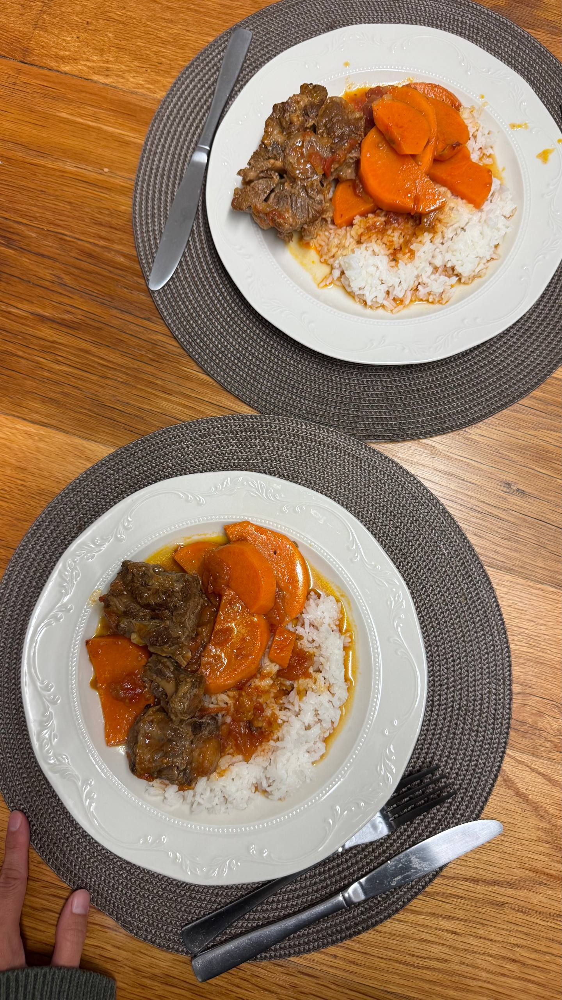

Oxtail Tomato Bredie

About the dish
A rich, slow-simmered South African classic:
meltingly tender oxtail in a sweet and savoury
tomato gravy with soft chunks of sweet potato.
It’s the kind of comforting dish that fills the
whole house with an irresistible aroma, perfect
for a cosy Sunday lunch or a chilly evening with
someone special. And best of all, it practically
cooks itself in one pot while you get on with
your day!
Ingredients (for 4 portions)
- 1 kg oxtail
- 1 kg ripe tomatoes, blanched and peeled
- 800 g tinned chopped tomatoes
- 2 large onions, chopped
- 2 large sweet potatoes, sliced
- Oil, for frying
- Salt and freshly ground black pepper, to taste
- Brown sugar, to taste
- Fresh basil, to serve (optional)
- 1–2 tbsp tomato paste, to thicken (if needed)
Follow the steps
- Heat the oil in a large saucepan and brown
the oxtail on all sides.
- Take the oxtail out of the pan, add the
onions and fry until soft.
- Return the oxtail to the pan along with the
fresh and tinned tomatoes, salt and pepper.
Cover and cook over low heat for about 3 hours
(or in the oven at 120°C). If the sauce
is too tart, add a little brown sugar.
- Add the sweet potatoes and cook for another 30
minutes. If the gravy is too thin, stir in
some tomato paste.
- Serve with rice and garnish with basil, if
you like.
Back to all recipes